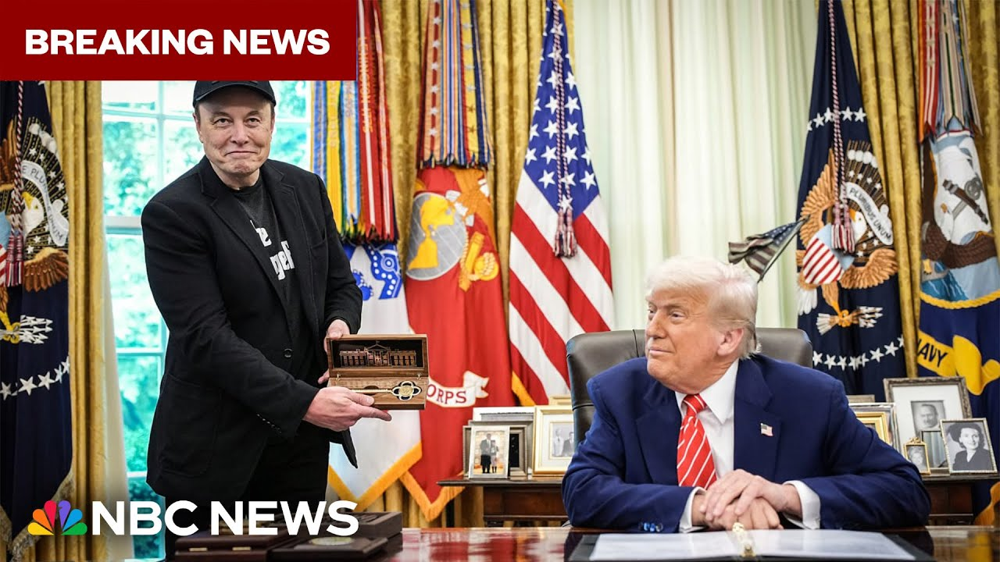

【突发：马斯克称卸任白宫职务后将继续担任特朗普的“朋友和顾问”】
Summary: Musk expresses gratitude for a special gift, reflects on his time as a government employee, and emphasizes the growing influence of the Doge team, promising continued support and friendship to the president while highlighting achievements in reducing waste and fraud.
摘要： 马斯克对一份特殊礼物表示感谢，回顾了担任政府雇员的经历，强调了Doge团队日益增长的影响力，承诺继续支持总统并保持友谊，同时强调了在减少浪费和欺诈方面取得的成就。

⏱️ Estimated Reading Time: 5 min
Gave a little special something we have here.
我们这里准备了一点特别的东西。
Thank you.
谢谢。
A very special that I give to very special people.
这是我对非常特别的人准备的非常特别的礼物。
I have given it to some, but it goes to very special people.
我曾把它送给一些人，但它只属于非常特别的人。
And I thought I'd I'd give it to Elon as a presentation from our country.
我想把它作为我们国家的礼物送给埃隆。
Thank you.
谢谢。
Thank you, Elon.
谢谢你，埃隆。
Thank you.
谢谢。
Take care of yourself.
照顾好自己。
Thank you.
谢谢。
The luck of this is amazing.
这份幸运令人惊叹。
large.
很大。
Well, let me say perhaps a few words.
好吧，让我简单说几句。
Um that this is not the end of Doge, but really the beginning.
嗯，这并不是Doge的结束，而是真正的开始。
Um my time as a special government employee necessarily had to end.
嗯，我作为特别政府雇员的任期必然要结束了。
It was a limited time thing.
这是一段有限的时间。
It's 134 days, I believe, which ends in a few days.
我相信是134天，再过几天就结束了。
So, uh so that uh you know, it comes with a time limit.
所以，你知道，它是有时间限制的。
Um and uh but the Doge team will only grow stronger over time.
嗯，但Doge团队只会随着时间的推移变得更强大。
Um the Doge influence will only grow stronger.
嗯，Doge的影响力只会越来越强。
It's uh I'd liken it to a sort of Buddhism.
嗯，我把它比作一种佛教。
It's like a way of life.
它就像一种生活方式。
Um so it is permeating throughout the government and I'm confident that over time we'll see a trillion dollars of savings uh and a reduction in in a trillion dollars of waste and fraud reduction.
嗯，它正在渗透到整个政府中，我相信随着时间的推移，我们将看到一万亿美元的节省，以及一万亿美元的浪费和欺诈减少。
Um the calculations of the doge team thus far um in in terms of an FY25 to FY26 delta are over 160 billion and and that's climbing.
嗯，到目前为止，Doge团队在FY25到FY26之间的增量计算已超过1600亿，而且还在上升。
We expect that probably that number will probably go over 200 billion soon.
我们预计这个数字可能很快就会超过2000亿。
So, I think uh the Doge team is doing an incredible job.
所以，我认为Doge团队做得非常出色。
They're going to continue doing doing an incredible job and um and I'll be and I'll continue to to to be visiting here and and be a friend and adviser to uh the president and I look forward to, you know, times being back in this amazing room.
他们将继续做一项了不起的工作，嗯，我也会继续来这里，并作为总统的朋友和顾问，我期待着再次回到这个令人惊叹的房间。
By the way, isn't this incredible?
顺便说一句，这不是很不可思议吗？
Look at this incredible look the I mean, it's stunning.
看看这不可思议的样子，我是说，它太惊艳了。
I think the the the way that the Oval Office, the how the president has just completely redone the Oval Office.
我认为总统对椭圆形办公室的改造方式。
It's beautiful.
它很美。
I I love the gold on the ceiling.
我非常喜欢天花板上的金色。
It's pretty nice.
它非常漂亮。
Yeah.
是的。
Um that's been there a long time.
嗯，它已经在那里很久了。
That was plaster.
那是石膏。
Nobody ever really saw it.
没有人真正看到过它。
They didn't know the eagle was up there and we highlighted it's a essentially it's a landmark, a great landmark.
他们不知道鹰在那里，我们强调了它实际上是一个地标，一个伟大的地标。
And that's 24 karat gold and everybody loved it and now they all see it when they come in.
那是24K金，每个人都喜欢它，现在他们进来时都能看到它。
So it's been it's been good.
所以它一直很好。
the oval office has had, you know, finally has the majesty that it deserves thanks to the president.
椭圆形办公室终于有了它应有的威严，这要感谢总统。
So, um, so I look forward to continuing to be a friend and adviser to the president, uh, continuing to support Doge team.
所以，嗯，我期待继续作为总统的朋友和顾问，继续支持Doge团队。
Um, and, uh, and we are relentlessly pursuing, uh, a trillion dollars in in waste and fraud uh, reductions which will benefit uh, the American taxpayer.
嗯，而且我们正在不懈地追求一万亿美元的浪费和欺诈减少，这将使美国纳税人受益。
Um, so uh, that's uh, that's it really.
嗯，所以，就是这样。
Um, thank you, Mr. President.
嗯，谢谢您，总统先生。
Thank you.
谢谢。
Great job.
干得好。
Thanks for watching.
感谢观看。
Stay updated about breaking news and top stories on the NBC News app or follow us on social media.
请通过NBC新闻应用或关注我们的社交媒体获取突发新闻和头条新闻的最新动态。